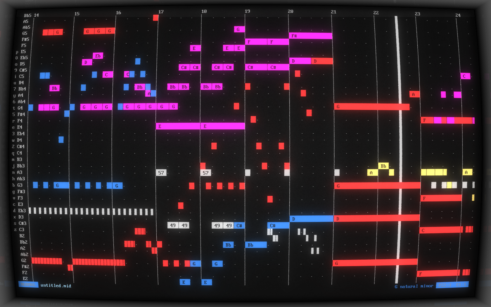

MusiCLI
January 23, 2022

git clone https://frie.dev/musicli.git
MusiCLI (pronounced "musically") is a MIDI sequencer that runs entirely in the terminal.
{% include readme/musicli.html %}January 23, 2022
git clone https://frie.dev/musicli.git
MusiCLI (pronounced "musically") is a MIDI sequencer that runs entirely in the terminal.
{% include readme/musicli.html %}